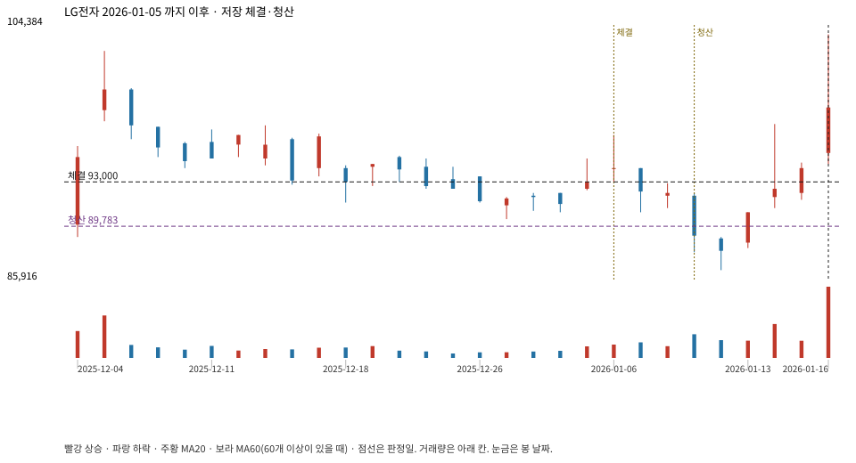

계좌를 다시 돌리지 않았다. 아래는 저장된 주문·체결·청산·비용·손익이다.

{
"case_id": "cd13d7a3ec6f8b8a",
"status": "closed",
"trade": {
"symbol": "066570.KS",
"signal_date": "2026-01-05",
"quantity": 222,
"entry": 93000,
"stop": 89828,
"target": 102500,
"planned_risk": 754732.7530919935,
"reserved_cash": 20666645.999999996,
"fill": {
"date": "2026-01-06",
"price": 93000,
"fee": 20646
},
"exit": {
"date": "2026-01-09",
"price": 89783.086,
"reason": "stop",
"net_pnl": -754732.7530919947,
"ambiguous_bar": false
}
},
"cost": "research fee 10bp each side, slippage 5bp; amounts below are the stored ledger, not a new run",
"chart": "c\/cd13d7a3ec6f8b8a.svg"
}